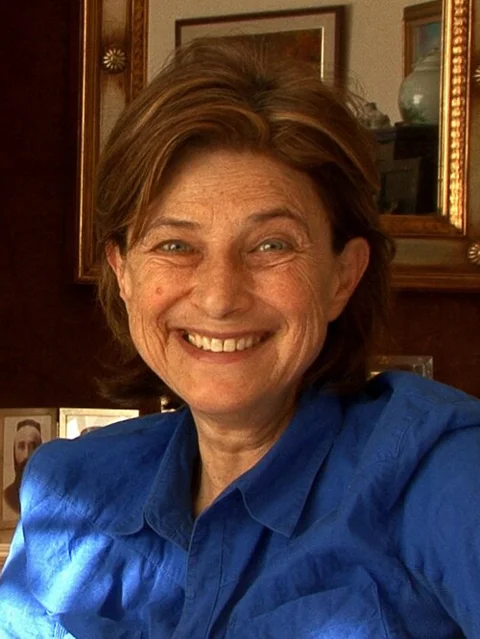
01 FILM IN THIS ARCHIVE
Chantal Akerman
Chantal Anne Akerman (French: ; 6 June 1950 – 5 October 2015) was a Belgian filmmaker, artist, and film professor at the City College of New York (2011–2015).
BEHIND THE CAMERA
Browse 75 director profiles, biographies and films in this archive.

75 director profiles

01 FILM IN THIS ARCHIVE
Chantal Anne Akerman (French: ; 6 June 1950 – 5 October 2015) was a Belgian filmmaker, artist, and film professor at the City College of New York (2011–2015).
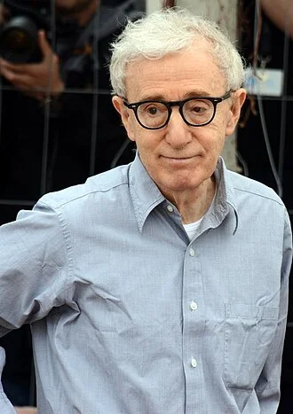
09 FILMS IN THIS ARCHIVE
Woody Allen (born Allan Stewart Konigsberg; November 30, 1935) is an American filmmaker, actor, writer, and comedian.
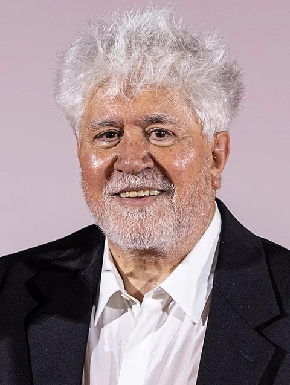
01 FILM IN THIS ARCHIVE
Pedro Almodóvar Caballero (Spanish: ; born 25 September 1949) is a Spanish film director, screenwriter and author.

02 FILMS IN THIS ARCHIVE
Wesley Wales Anderson (born May 1, 1969) is an American filmmaker.

01 FILM IN THIS ARCHIVE
Emile Ardolino (May 9, 1943 – November 20, 1993) was an American television and film director and producer, best known for his work on the films Dirty Dancing (1987) and Sister Act (1992).

03 FILMS IN THIS ARCHIVE
Ernst Ingmar Bergman (14 July 1918 – 30 July 2007) was a Swedish filmmaker and theatre director.
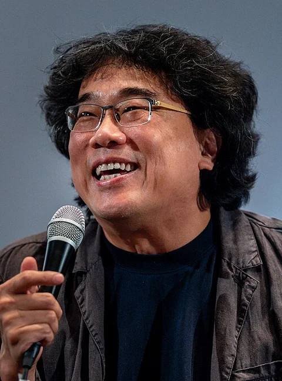
01 FILM IN THIS ARCHIVE
Bong Joon Ho is a South Korean filmmaker.
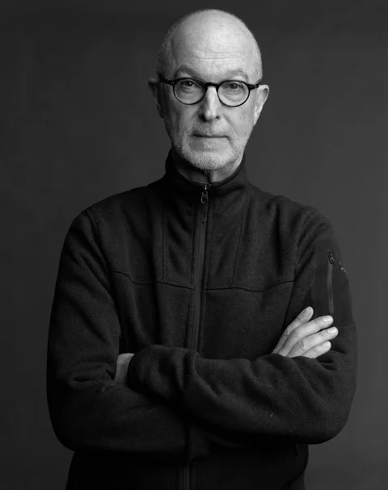
01 FILM IN THIS ARCHIVE
Martin Brest (born August 8, 1951) is an American film director, screenwriter, and producer.

02 FILMS IN THIS ARCHIVE
James Francis Cameron (born August 16, 1954) is a Canadian filmmaker and explorer.
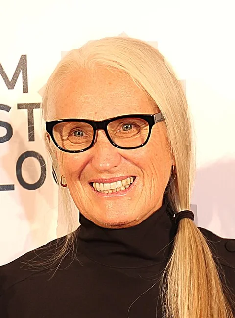
01 FILM IN THIS ARCHIVE
Dame Elizabeth Jane Campion (born (1954-04-30)April 30, 1954) is a New Zealand filmmaker whose accolades include two Academy Awards.
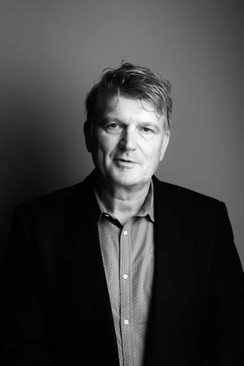
01 FILM IN THIS ARCHIVE
Peter Joseph Cattaneo MBE (born 1 July 1964) is a British filmmaker.

01 FILM IN THIS ARCHIVE
Christopher Joseph Columbus (born September 10, 1958) is an American filmmaker.
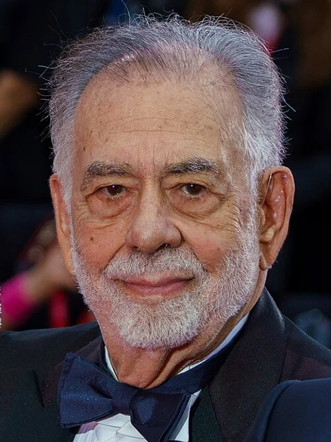
03 FILMS IN THIS ARCHIVE
Francis Ford Coppola ( KOH-pə-lə; born April 7, 1939) is an American filmmaker.

01 FILM IN THIS ARCHIVE
Sofia Carmina Coppola ( KOH-pə-lə; born May 14, 1971 in New York) is an American filmmaker and former actress.
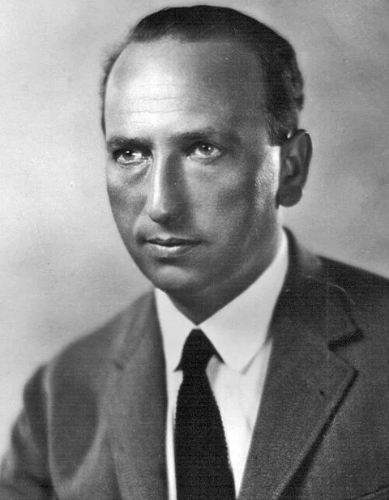
01 FILM IN THIS ARCHIVE
Michael Curtiz (; born Manó Kaminer; from 1905 Mihály Kertész; Hungarian: Kertész Mihály; December 25, 1886 – April 10, 1962) was a Hungarian and American film director, recognized as one of the most prolific directors in history.
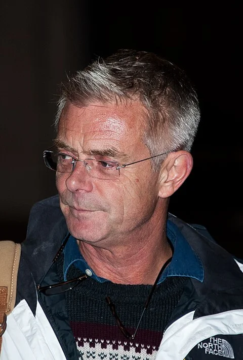
01 FILM IN THIS ARCHIVE
Stephen David Daldry CBE (born 2 May 1960) is an English director and producer of film, theatre, and television.

01 FILM IN THIS ARCHIVE
Frank Árpád Darabont (born Ferenc Árpád Darabont, January 28, 1959) is an American screenwriter, director, and producer.
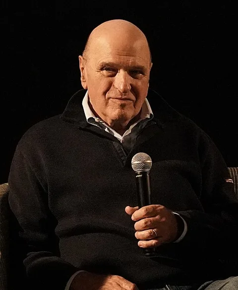
01 FILM IN THIS ARCHIVE
Andrew or Andy Davis may refer to:
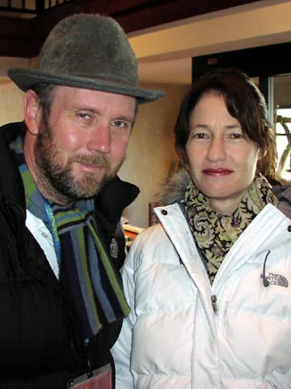
01 FILM IN THIS ARCHIVE
Jonathan Dayton (born July 7, 1957) and Valerie Faris (born October 20, 1958) are two American directors and producers for films and music videos.
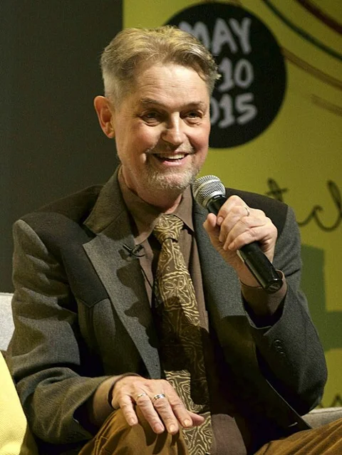
01 FILM IN THIS ARCHIVE
Robert Jonathan Demme ( DEM-ee; February 22, 1944 – April 26, 2017) was an American filmmaker.
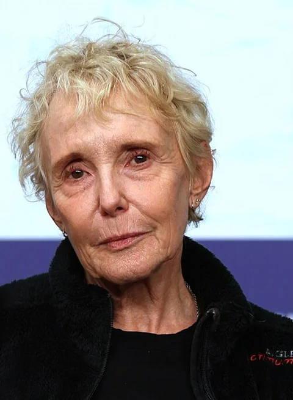
01 FILM IN THIS ARCHIVE
Claire Denis (; French: ; born 21 April 1946) is a French film director and screenwriter.
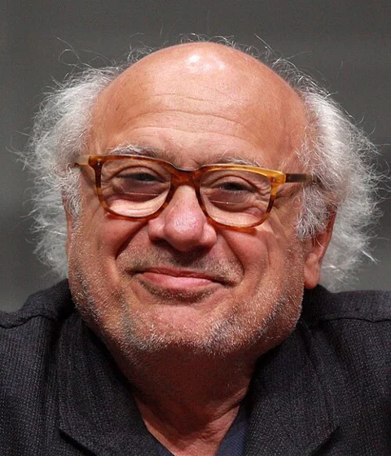
01 FILM IN THIS ARCHIVE
Daniel Michael DeVito Jr. ( də-VEE-toh; born November 17, 1944) is an American actor, comedian and filmmaker.

01 FILM IN THIS ARCHIVE
Richard Donner (born Richard Donald Schwartzberg; April 24, 1930 – July 5, 2021) was an American filmmaker.

04 FILMS IN THIS ARCHIVE
Clinton Eastwood Jr. (born May 31, 1930) is an American retired actor and filmmaker.
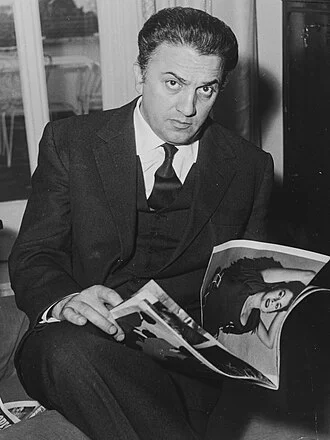
03 FILMS IN THIS ARCHIVE
Federico Fellini (Italian: ; 20 January 1920 – 31 October 1993) was an Italian film director and screenwriter known for his distinctive style that blends fantasy and baroque images with earthiness.

01 FILM IN THIS ARCHIVE
David Andrew Leo Fincher (born August 28, 1962) is an American filmmaker.
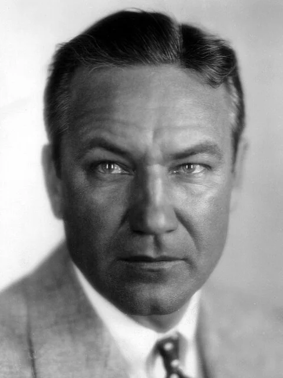
01 FILM IN THIS ARCHIVE
Victor Lonzo Fleming (February 23, 1889 – January 6, 1949) was an American film director, cinematographer, and producer.
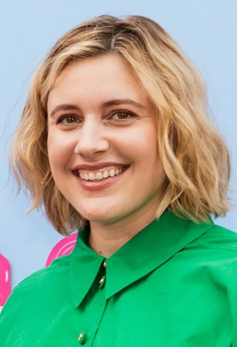
01 FILM IN THIS ARCHIVE
Greta Celeste Gerwig ( GUR-wig; born August 4, 1983) is an American actress and filmmaker.

08 FILMS IN THIS ARCHIVE
Sir Alfred Joseph Hitchcock (13 August 1899 – 29 April 1980) was an English filmmaker.

01 FILM IN THIS ARCHIVE
Jonathan Wilden Hughes Jr. (February 18, 1950 – August 6, 2009) was an American filmmaker, writer, and producer.
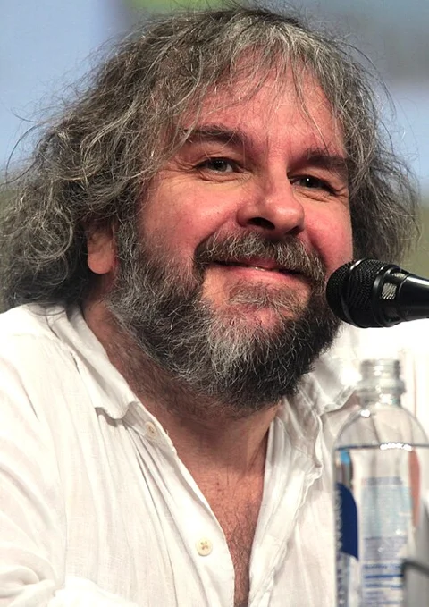
01 FILM IN THIS ARCHIVE
Sir Peter Robert Jackson (born 31 October 1961) is a New Zealand filmmaker.

01 FILM IN THIS ARCHIVE
James Robert Jarmusch ( JAR-məsh; born January 22, 1953) is an American filmmaker and musician.
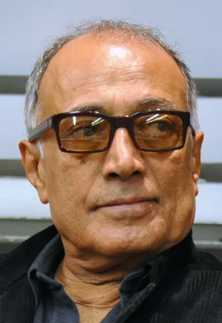
01 FILM IN THIS ARCHIVE
Abbas Kiarostami (Persian: عباس کیارستمی ; 22 June 1940 – 4 July 2016) was an Iranian film director, screenwriter, poet, photographer, and film producer.
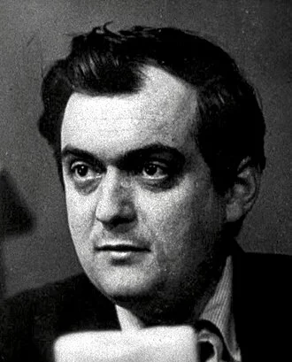
04 FILMS IN THIS ARCHIVE
Stanley Kubrick (July 26, 1928 – March 7, 1999) was an American filmmaker and photographer.

04 FILMS IN THIS ARCHIVE
Akira Kurosawa (黒澤 明 or 黒沢 明, Kurosawa Akira; March 23, 1910 – September 6, 1998) was a Japanese filmmaker who directed 30 feature films in a career spanning six decades.
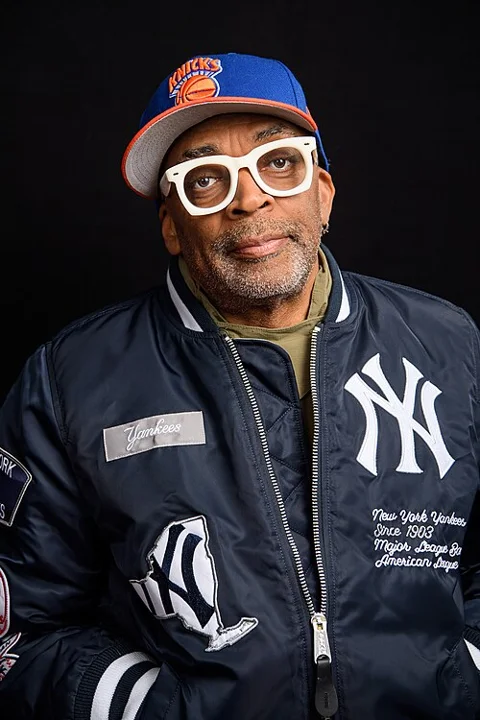
01 FILM IN THIS ARCHIVE
Shelton Jackson "Spike" Lee (born March 20, 1957) is an American filmmaker and actor.
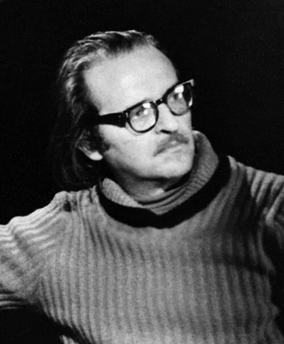
01 FILM IN THIS ARCHIVE
Sidney Arthur Lumet ( loo-MET; June 25, 1924 – April 9, 2011) was an American film director.
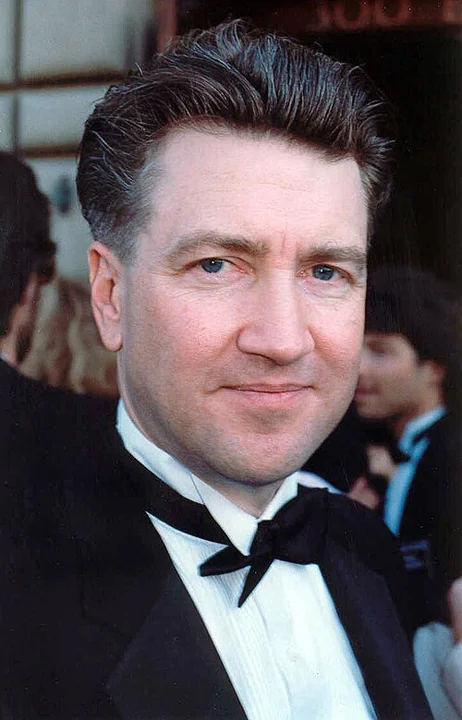
02 FILMS IN THIS ARCHIVE
David Keith Lynch (January 20, 1946 – January 16, 2025) was an American filmmaker and artist.

02 FILMS IN THIS ARCHIVE
Adrian Lyne (born 4 March 1941) is an English film director.
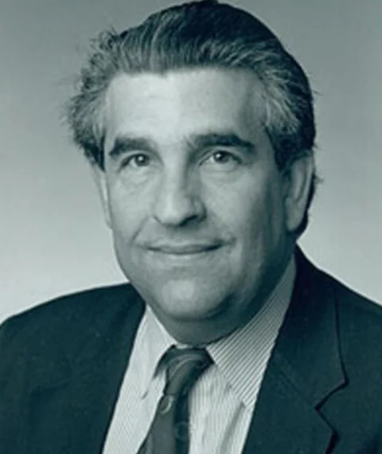
01 FILM IN THIS ARCHIVE
Robert Mandel (born 1945) is a film and television director and producer from Oakland, California.
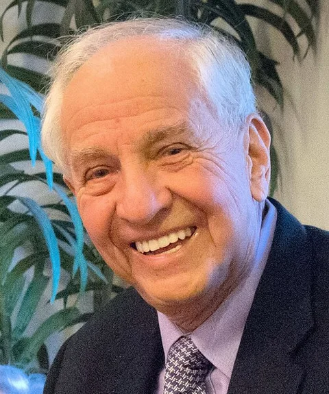
01 FILM IN THIS ARCHIVE
Garry Kent Marshall (November 13, 1934 – July 19, 2016) was an American screenwriter, director, producer and actor.
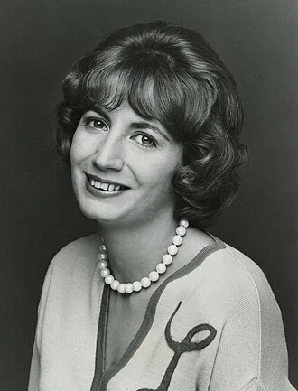
01 FILM IN THIS ARCHIVE
Carole Penny Marshall (October 15, 1943 – December 17, 2018) was an American actress, film director, and producer.
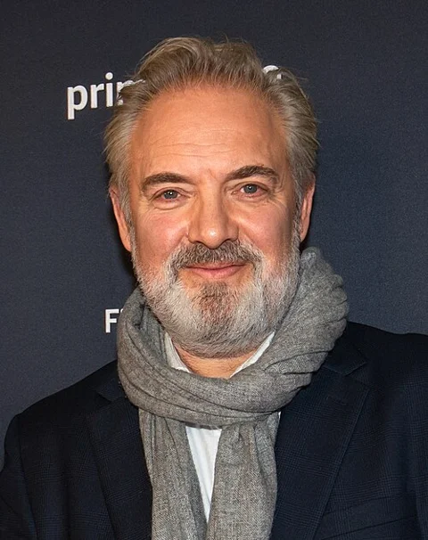
01 FILM IN THIS ARCHIVE
Sir Samuel Alexander Mendes (born 1 August 1965) is an English filmmaker and stage director.

01 FILM IN THIS ARCHIVE
Allan Moyle (born 1947) is a Canadian film director, writer, and actor.
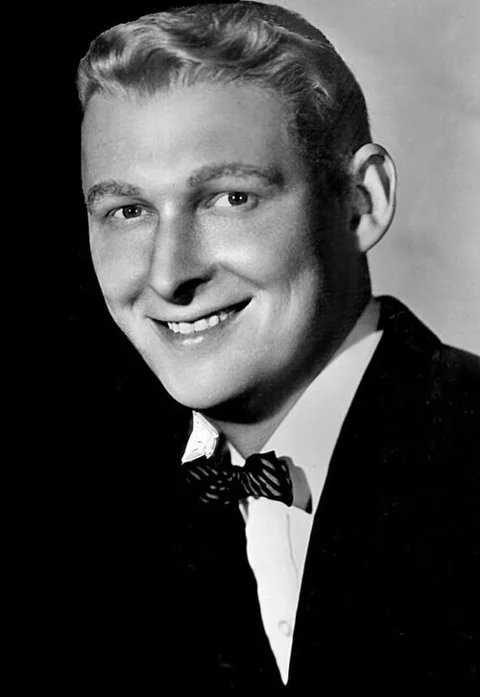
01 FILM IN THIS ARCHIVE
Mike Nichols (born Igor Mikhail Peschkowsky; November 6, 1931 – November 19, 2014) was an American film and theatre director and comedian.
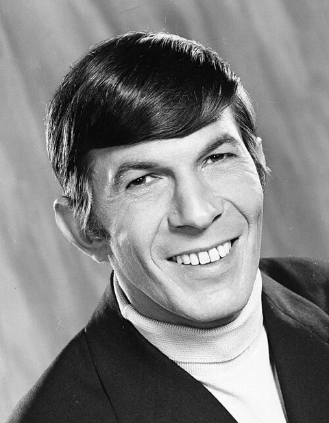
01 FILM IN THIS ARCHIVE
Leonard Simon Nimoy ( NEE-moy; March 26, 1931 – February 27, 2015) was an American actor and director, famous for playing Spock in the Star Trek franchise for over 40 years.
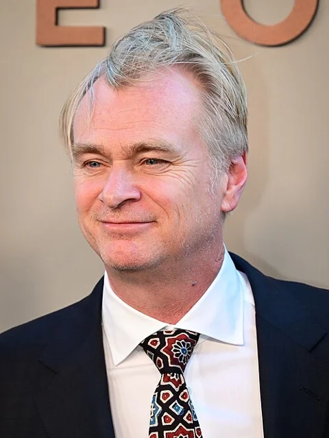
01 FILM IN THIS ARCHIVE
Sir Christopher Edward Nolan (born 30 July 1970) is a British and American filmmaker.
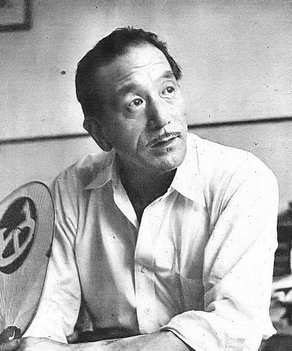
02 FILMS IN THIS ARCHIVE
Yasujirō Ozu (小津 安二郎, Ozu Yasujirō; 12 December 1903 – 12 December 1963) was a Japanese filmmaker.
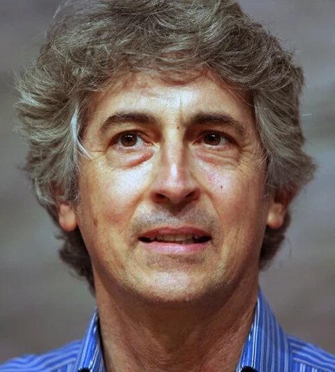
01 FILM IN THIS ARCHIVE
Constantine Alexander Payne (born February 10, 1961) is an American filmmaker.
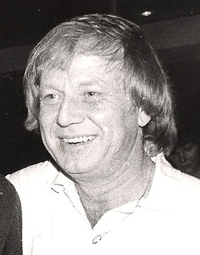
01 FILM IN THIS ARCHIVE
Wolfgang Petersen (14 March 1941 – 12 August 2022) was a German film and television director, screenwriter and producer.


02 FILMS IN THIS ARCHIVE
The British film-making partnership of Michael Powell (1905–1990) and Emeric Pressburger (1902–1988)—together often known as The Archers, the name of their production company—made a series of influential films in the 1940s and 1950s.

01 FILM IN THIS ARCHIVE
Sir Carol Reed (30 December 1906 – 25 April 1976) was an English film director and producer.

02 FILMS IN THIS ARCHIVE
Robert Reiner (; March 6, 1947 – December 14, 2025) was an American filmmaker, actor, and political activist.
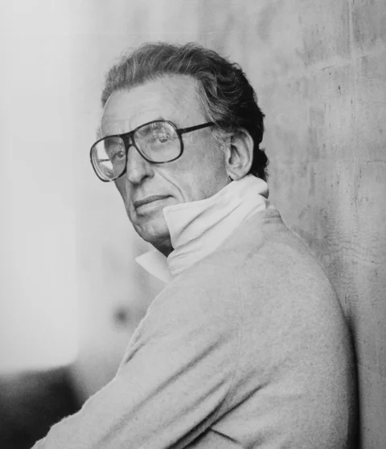
01 FILM IN THIS ARCHIVE
Herbert David Ross (May 13, 1927 – October 9, 2001) was an American choreographer, director, and producer, who was active in both theatre and film.
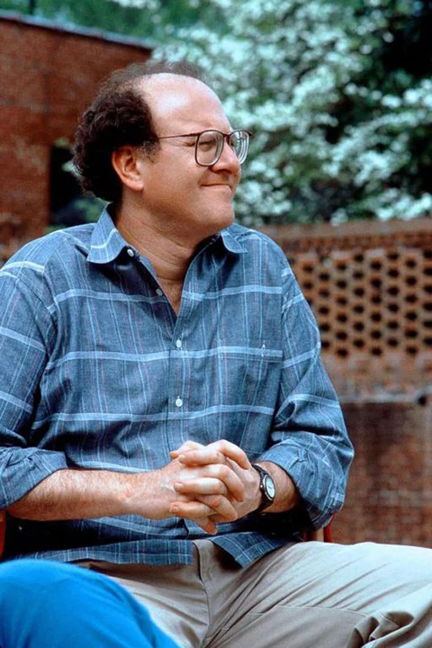
01 FILM IN THIS ARCHIVE
Joseph Porter Ruben (born May 10, 1950) is an American retired filmmaker.
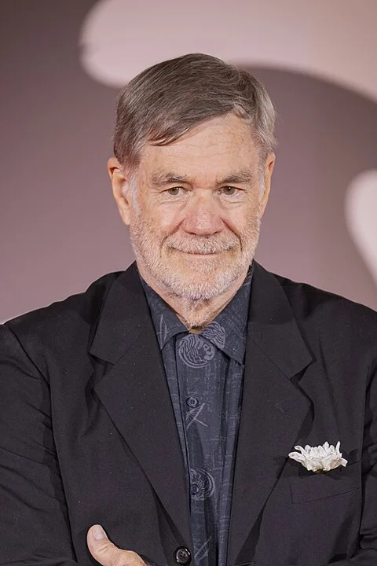
01 FILM IN THIS ARCHIVE
Gus Green Van Sant Jr. (born July 24, 1952) is an American filmmaker, photographer, painter, and musician.
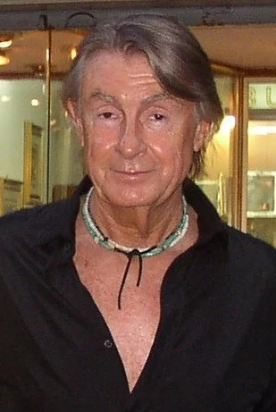
02 FILMS IN THIS ARCHIVE
Joel T.
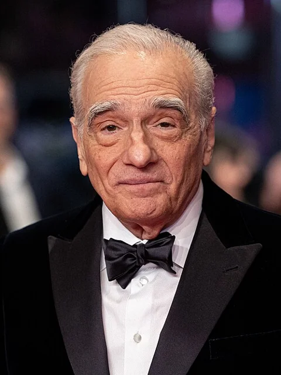
03 FILMS IN THIS ARCHIVE
Martin Charles Scorsese ( skor-SESS-ee; Italian: ; born November 17, 1942) is an American filmmaker.
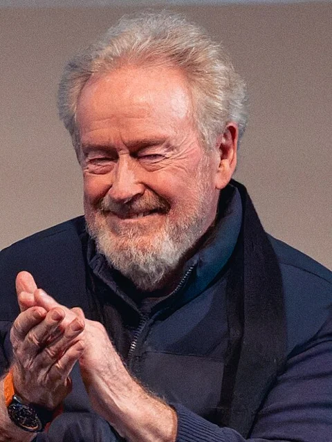
03 FILMS IN THIS ARCHIVE
Sir Ridley Scott (born 30 November 1937) is an English filmmaker.
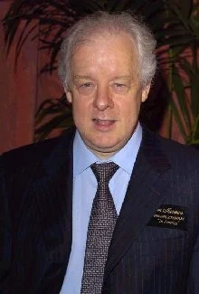
01 FILM IN THIS ARCHIVE
Jim Sheridan (born 6 February 1949) is an Irish filmmaker.
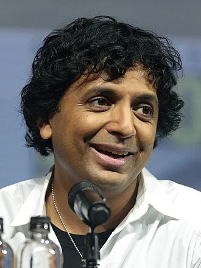
01 FILM IN THIS ARCHIVE
Manoj Nelliyattu Shyamalan (born August 6, 1970), known professionally as M.
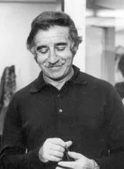
01 FILM IN THIS ARCHIVE
Donald Siegel ( SEE-gəl; October 26, 1912 – April 20, 1991) was an American film and television director, producer, and editor.

06 FILMS IN THIS ARCHIVE
Steven Allan Spielberg (; born December 18, 1946) is an American filmmaker.
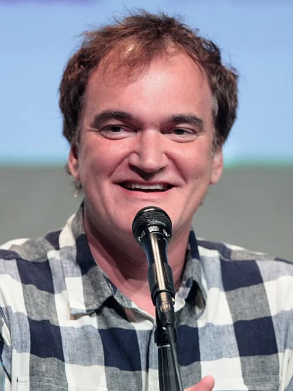
04 FILMS IN THIS ARCHIVE
Quentin Jerome Tarantino ( TARR-ən-TEE-noh; born March 27, 1963) is an American filmmaker, actor, and author.
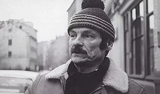
01 FILM IN THIS ARCHIVE
Andrei Arsenyevich Tarkovsky was a Soviet film director and screenwriter of Russian origin.
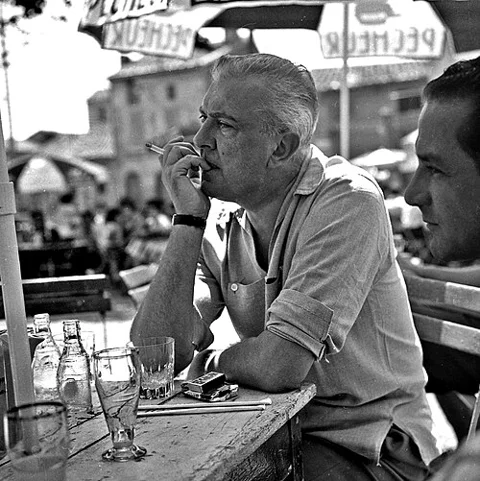
01 FILM IN THIS ARCHIVE
Jacques Tati was a French mime, filmmaker, actor and screenwriter.
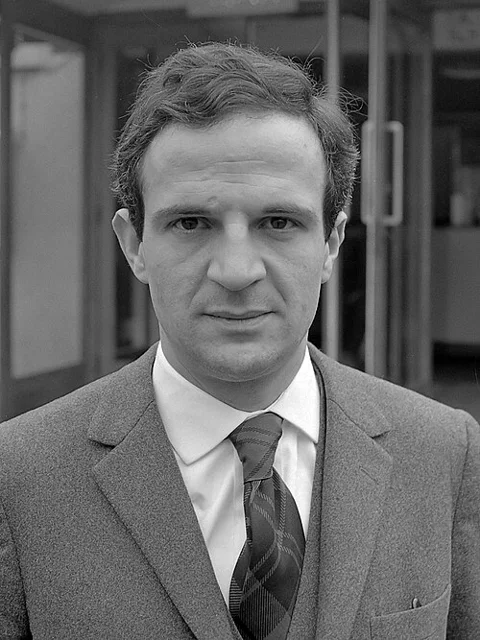
01 FILM IN THIS ARCHIVE
François Roland Truffaut (UK: TROO-foh, TRUU-, US: troo-FOH; French: ; 6 February 1932 – 21 October 1984) was a French filmmaker, actor, and critic.
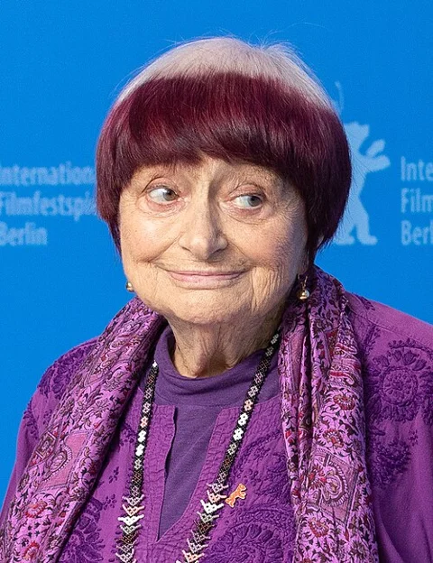
02 FILMS IN THIS ARCHIVE
Agnès Varda (born Arlette Varda; 30 May 1928 – 29 March 2019) was a Belgian-born French filmmaker, artist, and photographer.
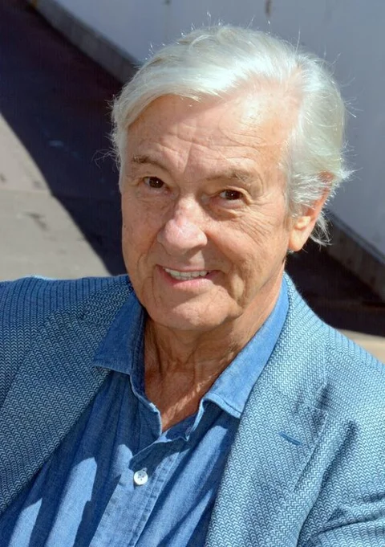
01 FILM IN THIS ARCHIVE
Paul Verhoeven (Dutch: ; born 18 July 1938) is a Dutch filmmaker, who has worked variously in the Netherlands, the United States, and in France.

01 FILM IN THIS ARCHIVE
Lana Wachowski (; formerly Larry Wachowski, born June 21, 1965) and Lilly Wachowski (formerly Andy Wachowski, born December 29, 1967) are American film and television directors, writers and producers.
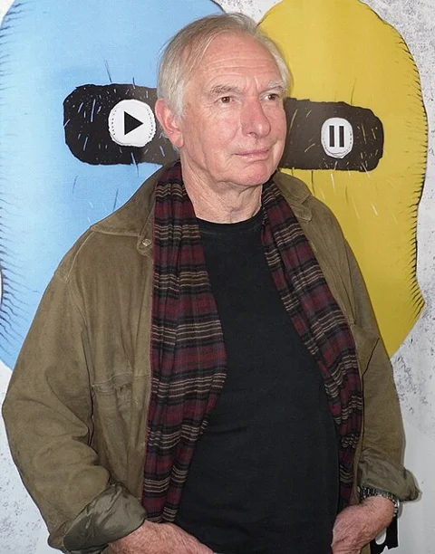
02 FILMS IN THIS ARCHIVE
Peter Lindsay Weir AM ( WEER; born 21 August 1944) is an Australian retired film director, screenwriter, and producer.
01 FILM IN THIS ARCHIVE
George Orson Welles (May 6, 1915 – October 10, 1985) was an American actor and filmmaker.
01 FILM IN THIS ARCHIVE
Wong Kar-wai (born 17 July 1958) is a Hong Kong filmmaker.
03 FILMS IN THIS ARCHIVE
Robert Lee Zemeckis (born May 14, 1951), sometimes called Bob Zemeckis, is an American filmmaker.
01 FILM IN THIS ARCHIVE
Jerry Gordon Zucker (born March 11, 1950) is an American filmmaker.
Biographical excerpts adapted from Wikipedia under CC BY-SA 4.0. Sources and full biographies are linked on each profile.